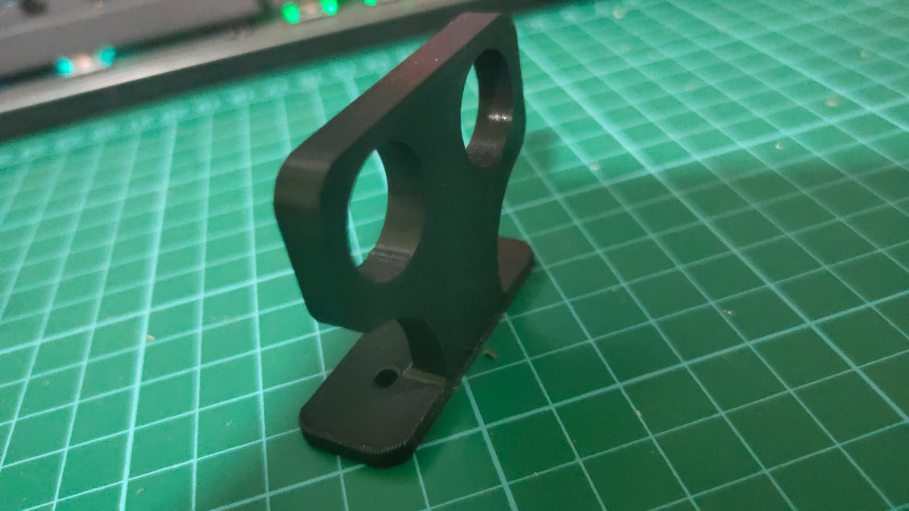
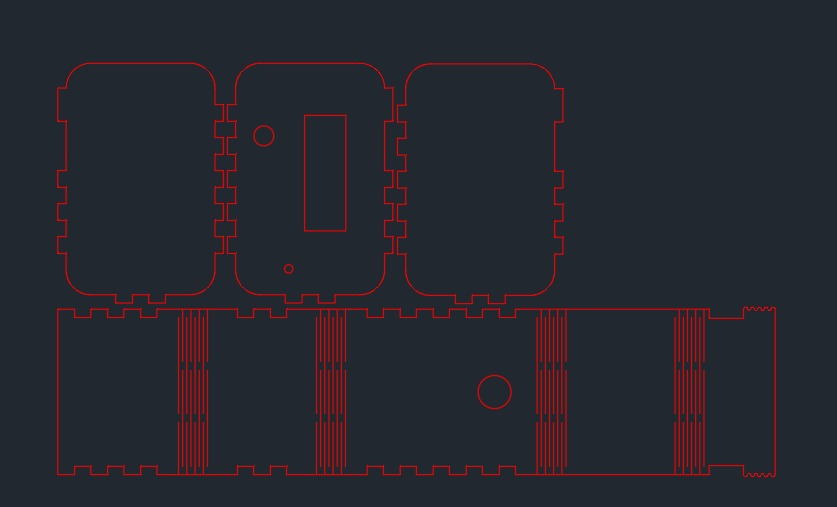
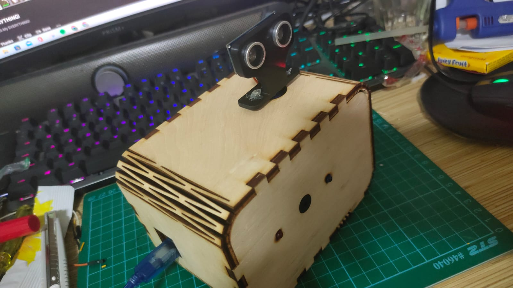

Project Sketch

The way this product works is by waving a hand at the PIR sensor. It will activate the NeoPixels which display the time.
The way this product works is by waving a hand at the PIR sensor. It will activate the NeoPixels which display the time.
The idea of the radar sensor is by a user named 'how to mechatronics' on youtube. The parts for his project consists of Arduino uno,ultrasonic sensor ,servo motor . In his project,he connected to project to the computer to show the radar signal In contrast, i will be using a buzzer and light for indication. I also followed his code and made a few changes by adding a led and buzzer.
This is a step-by-step "How-to":
CAD:Use CAD to design and visualize the body and 3D printed items. For the bodywork, design a rectangular box without the front panel with box joints and the dimensions from the preliminary sketch. As for the backplate, first create slots with the thickness of the arcylic on the sidewall. Next, midplane the sidewall. Finally, create a rectangle face on the midplane and combine it with the bodywork. The 7-Segment is created by using the canvas tool. Trace the 7-segment display. Using the rectangular pattern tool create 3 more display.
There is one 3D printed item in this project. it is the holder for the ultrasonic sensor

3D Printing:After designing the intended items for printing, we then proceed to the printing stage. First we have to slice it in the the CURA software, we also must ensure that printing settings are correct. The settings are Material: PLA, Nozzle:0.4mm, Layer Height:0.2mm, Wall Thickness:0.8mm, Wall Count:4, Infil:15% Bed Adhesion:Brim . Ensure that the first 4 layers is printed properly before leaving.

Laser Cutting:Pick out the material and measure its thickness. I went for a 5mm wood. Next import your sketches in autoCAD and arrange it to ensure that no material is wasted. Save it as a DXF. file. Next import the file into CorelDraw. Ensure that there is enough space on the mateial for the cut. If not measure the limited space, use the ruler in CorelDraw as the guideline and fit in the pieces. Change the dimension to 'hairline'. After preparing the sketches, prepare the printer by ensuring the setting for the cut is correct. Turn on AutoFocus, change Power: 65%, Speed: 20% and Frequency: 20% , don't forget to set in the thickness of the material. Next prepare the printer for the cut.
Printer Paperation:
1. Go to config and press rest to (0,0).
2. Jog the nozzle to space available.
3.Open lid and begin printing to check there is enough space.
4. Close lid to print, make sure correct
file is use.
After print is done make sure it cut through if not repeat the cutting procedure.
Microcontroller:I use the Arduino UNO for testing and debugging and for the final project
| Qty | Item description | Costs |
|---|---|---|
| 1 | Arduino uno | $8.05 |
| 1 | ultrasonic sensor | $9.87 |
| 1 | servor motor | $4.60 |
| 1 | buzzer | $9.95 |
| 2 | 5mm led light | $4.99 |
#include

this is the final radar sensor system
The project was a success, even though the coding took a long time. There were no defect for laser cuts and the printed model. There is a minor problem with programming the buzzer to have different sound, there seem to be a delay when trying to activate it. I should also try to improve my soldering as it cause many wiring problem. In terms of upgradability, i could add an lcd screen.
1. Insert plug into the slot
2. ultrasonic sensor activates and moves
3. led and buzzer will be activated when object is present